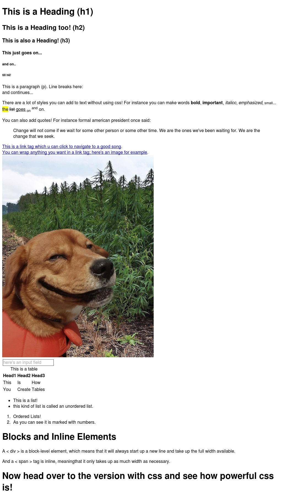

This is a Heading
This is a Heading too!
This is also a Heading!
This just goes on...
and on..
till h6!
This is a paragraph (p). Line breaks here:
and continues...
There are a lot of styles you can add to text without using css! For
instance you can make words bold, important, italicc, emphasized, small...
the list goes on and on.
You can also add quotes! For instance formal american president once said:
Change will not come if we wait for some other person or some other
time. We are the ones we've been waiting for. We are the change that
we seek.
This is a link tag which u can click to navigate to a good song.
You can wrap anything you want in a link tag; here's an image for example.
here's an input field

This is a table
| Head1 |
Head2 |
Head3 |
| This |
Is |
How |
| You |
Create |
Tables |
This is a list!
this kind of list is called an unordered list.
Ordered Lists!
As you can see it is marked with numbers.
Blocks and Inline Elements
A div is a block-level element, which means that it will always start up a new line
and take up the full width available.
And a span tag is inline, meaning span that it only takes up as much width as necessary.
Now head over to the version with css and see how powerful css is!